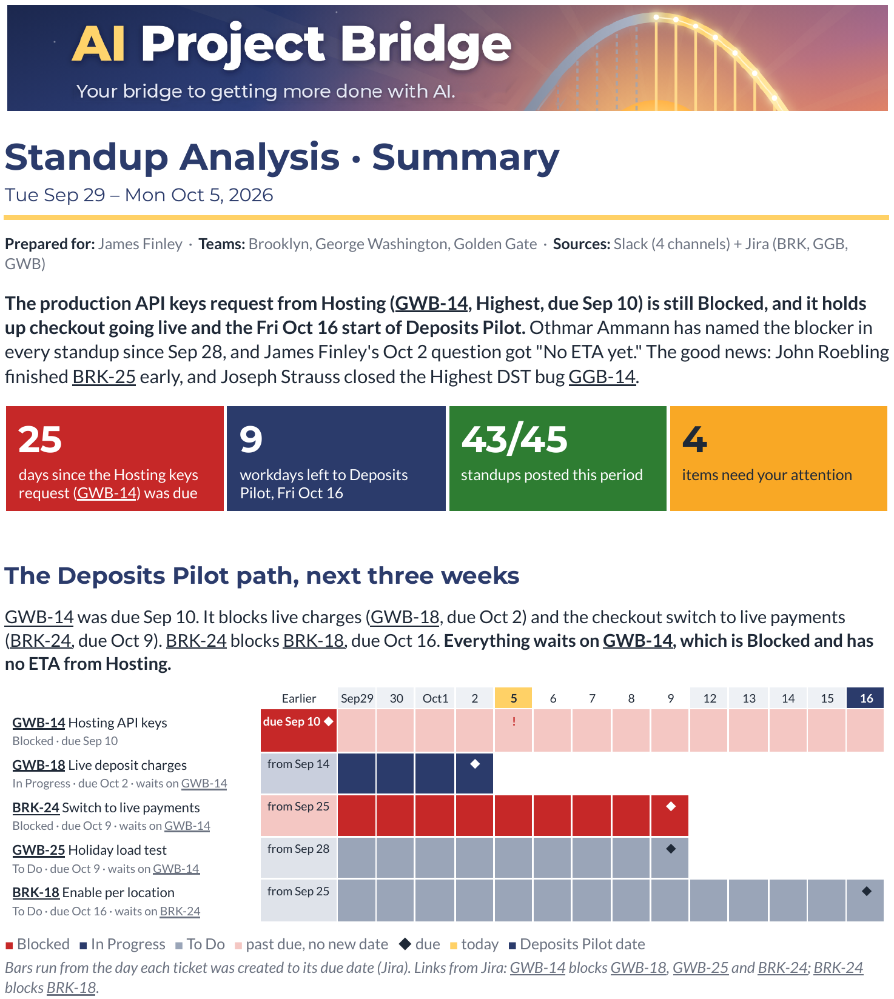

AI Standup Analyzer
What are you missing in your teams' standups?
The AI Standup Analyzer reads your team's Slack standups and Jira tickets every morning and flags what's slipping before it becomes a problem.
Early access price. Goes to $199 later.
For project managers and anyone who leads software teams.
More teams. More time zones. Over 100 standups a week.
The warning signs are in there. They're just buried in posts that arrive all day, from people in different time zones, about tickets that live somewhere else.
25people across several teams
5standups each, every week
125posts to track and react to, every week
Blockers, risks and wins in plain words
The AI Standup Analyzer reads every standup post and checks it against Jira, so it catches what a quick skim misses.
- The same blocker showing up day after day
- Work "still in progress" day after day, with nothing moving in Jira
- "No blockers" in standup while Jira says otherwise
- Missed check-ins
- Work paused and never picked back up
Plus: a health check for each team, trends for each person, and wins worth celebrating with your team and their supervisors.
What Slack says
FRI OCT 2 · SAME BLOCKER, 5TH STANDUP IN A ROW
Othmar Ammann #launch-deposits
"No ETA yet. Still working on it with them."
What Jira says
GWB-14Production API keysBlocked
⚑ The same blocker, day after day, and it's holding up the launch
From a real report on the demo company. Fictional people and data.
Your report flags it and suggests the question to ask: "What date has Hosting committed to for the production keys, and who can escalate if there is none?"
How it works
It runs in a Google Sheet in your own Google account. Your team's standups and tickets stay in your own accounts: they go only to your Google Drive and the AI provider you pick, never to us. No new logins for your team.
Collect
It gathers your teams' standup posts from Slack and their tickets from Jira into one standup bundle.
Analyze
Your own AI reads the bundle and writes the reports. Two ways to connect it:
Automatic, with an AI key: the Sheet sends the bundle to your Claude, ChatGPT or Gemini account using an AI key, a private code from that account. Your AI provider bills you directly.
Manual, copy and paste with no key: you copy the bundle into your own AI chat, then paste its reply back into the Sheet. Free.
Report
Your reports arrive in your email and in your Google Drive on the mornings you pick, or any time you ask from the Sheet's menu.
Quick alerts or the full story
Red Flags
DailyWhat needs you today, in a short email.
Summary
WeeklyOne page: team health, risks and wins.
Detailed
WeeklyThe evidence behind every flag, with every ticket linked.

Easy to start. Cheap or free to run.
- Runs in Google Sheets
- Works with Jira and Slack, free plans included
- Uses your own Claude, ChatGPT or Gemini account
One-time $149 early access price. AI costs are billed by your own AI provider.
Less than $1 a week in AI costs, billed directly by your own AI provider.
A typical week: the Summary and Detailed reports once a week, plus Red Flags emails on the mornings you pick.Free to run if you copy and paste.
Your standups and tickets go from your Slack and Jira, through your own Google account, to your own AI provider. AI Project Bridge never sees them.Built by a project manager, for people who lead software teams
I've spent 20 years in project management. As Director of Operations, I led a team of project managers while still running engineering projects myself.
My teams ran async standups in Slack across the country. Posts arrived all day, and keeping them straight, and spotting who was stuck, was a job in itself. I read them every day, but spotting patterns across days and people was hard. So I had AI review them with me, check them against Jira, and point out what needed my attention.
AI and automation did the busywork, so my time went to people and decisions. AI Project Bridge is where I'm packaging what worked, one tool at a time.
3 → 6teams I ran personally, without doubling my hours
50%drop in average cycle time, 13.65 to 6.79 days
20 yearsin project management (PMP, CSM)
Questions
Who is it for?
Project managers, product managers, engineering managers, and anyone whose teams post daily standups in Slack and track work in Jira.
What do I need to run it?
A Google account for the Sheet, your team's Slack and Jira (free plans work), and either an AI account (Claude, ChatGPT or Gemini) or a chat window to paste into. If your Slack needs an admin to approve new apps, the setup guide includes a note you can send them.
What does it cost?
Early access price: $149, one time. It goes to $199 later. AI costs, if you use an AI key, are billed by your own AI provider. If you can't get it working within 14 days of purchase, email admin@aiprojectbridge.com. We'll help you get set up, and if we can't, you get a full refund.
What does it cost to run?
With an AI key, a normal week costs well under $1, billed by your own AI provider. With copy and paste, it's free.
Where does my team's data go?
The Analyzer runs inside a Google Sheet in your own Google account. It reads Slack and Jira with your own keys, saves the standup bundle and reports to your own Google Drive, and sends the bundle only to the AI provider you choose, on your own account. AI Project Bridge never receives your standups, tickets or keys. With copy and paste, nothing is sent to any AI automatically.
Does it work with Microsoft Teams or Microsoft 365?
Slack, Jira and Google Sheets come first. Tell me on the early access form what your team uses; it decides what I build next.
When can I get it?
Now. Get the AI Standup Analyzer for the $149 early access price. People on the early access list hear first about what I build next.
Who are James Finley and Tessory?
They're a demo project manager and a demo company I created to show the Analyzer working on realistic data. Every name, ticket and standup in the screenshots is fictional.
Early access
What should I build next?
Join the early access list and tell me what takes up too much of your time each week. You'll be first in line.